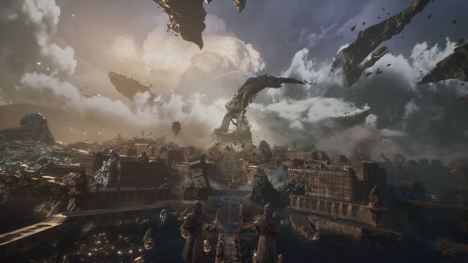
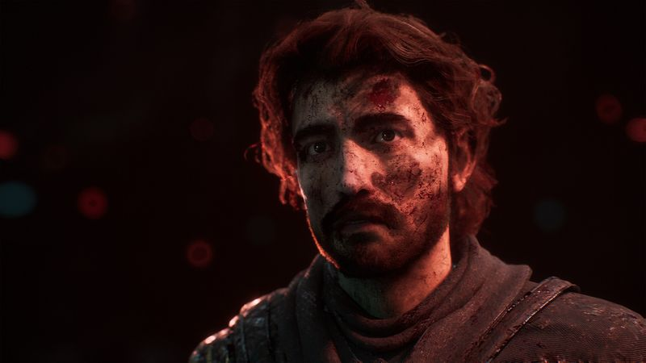

The thirty-second version
The best surprise of 2025.
Finally, a JRPG that also wants you to have Souls reflexes. Great.
Clair Obscur is the best RPG surprise we've had in years. It looks like a painting, it plays like a rhythm game hiding inside a turn-based one, and it commits to a real story with real stakes. If we'd known a small French studio was cooking this we'd have cleared April ahead of time. Just play it.
Okay, what is this thing?
Expedition 33 opens on a doomed city, a big number, and a small crew of people volunteering to fix it, and inside fifteen minutes it's very clear this isn't going to be a gentle Saturday afternoon. The world is Belle Époque France run through a pastel filter and then set on fire, and every fight asks you to sit still and pick a move and then, treacherously, dodge in real time. We were not ready for that in Chapter One and we were less ready by Chapter Three.
The trick that makes this work is that turn-based combat gets a live-action layer bolted on top. You queue your action like any RPG, then you have to actually parry or dodge whatever the enemy throws back. It's beautiful and mean and it lands, because the animations are so precise you can read them. Bring reading glasses.


Why it escaped the group chat
- Turn-based combat that adds real-time parry and dodge checks to every round.
- The world is inspired by Belle Époque France, which means striking clothes and worse politics.
- First game from Sandfall Interactive, which we're pretending to have known about all along.
Three dads enter
01
Dad Who Skipped the Tutorial
I liked the parry rhythm more than the party menu.
I normally hard-pass on any game with a stat screen. Clair Obscur got me because the fights themselves are basically a two-note rhythm game, and I can do a two-note rhythm game. I let one of the other two build the party and just showed up to press the dodge button on time. I was suspiciously good at it.
02
The Descent Guy
A turn-based system with real-time enforcement is my happy place.
I clocked that every character's kit is a small optimisation puzzle and immediately made a chart. Enemies telegraph their windups so precisely that I can plan three turns ahead and still parry the counter. I said the word 'clean' out loud. From me that's a five-star review, and I don't hand those out.
03
Normal-ish Dad
It's a proper long RPG, and it earns every hour.
I was worried it'd be all vibes and no game. It isn't. There's a real story with a real ending and characters I actually cared about by the mid-game, which isn't something I say lightly. Save often, dodge always, and don't try to rush this one. It's better when you let it breathe.
Who it is for and what to watch
Invite these people
- RPG folks who wish combat wasn't a menu you fell asleep in
- Anyone who loved Persona but wanted more Bloodborne in their turn order
- Dads who need proof a debut studio can still ambush the year
Dad caveats
- The parry timing is unforgiving until you learn to read a windup
- There is real story here and real death; it isn't a cosy hangout
- You will spend one late night arguing about your favourite party member
Receipts
Played to the credits on PC by two of us across several weeks, mostly on school nights when the kids were asleep and the parry timing was mostly not.